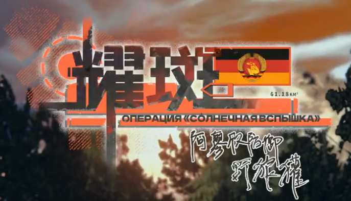

Back to main page :
[Main page]
[Story List]
[Next Chapter]
1-1 The first Light Dawn
Characters
Warrant Officer
Julius
Erika
Hannah
Sylvia
Summary
In the occupied town of Ostheimische, soldiers of the Schmalkalden Defense Force were busy replacing road signs. They believed the war would soon end in their victory, but the men of Long-Range Reconnaissance Group 501 taught them a lesson. As dawn broke, the massive counter-offensive operation "Solar Flare" began, and the reconnaissance group immediately headed behind enemy lines to carry out its mission.
[On a Road Where Ostenheim Democratic Republic Tanks Still Burn]
[A single trucks Drives through]
Soldier B (Schmalkalden)
I thought the name wasn't changed, why bother replacing the roadsign?
Soldier A (Schmalkalden)
You haven’t notice?
Soldier A
"these ossi's signs were all mutilated "simplified" characters. Even the vowel character's fonts are irregular in width of the opening.", we have to change them to comply with Sin 1451 roadsigns standard.
tl note: this is probably a reference to chinese right wing that supports the traditional writing style insted of the simplified version.
Soldier B
What a bunch of troublemakers. They surely won't be able to withstand a round of nukes like that, right?
Soldier A
Not a problem, not a single mouse will survive. It’s essentially a checkmate right from the opening; the rest is just a victory march.
Soldier B
”It is not an offensive, but a victory parade. Ossis are demoralized, they’ll surrender en masse the moment they see the MNF” that’s what all the officers used to say.
Soldier B
And yet they still resisted til now, even launched a counterattack.
Soldier A
There won't be any more resistance, nor any surrender, all we have to worry about is the radioactive fallout.
Soldier B
And yet they still resisted til now, even launched a counterattack.
Soldier A
There won't be any more resistance, nor any surrender, all we have to worry about is the radioactive fallout.
Soldier B
Especially the counterattack from the day before, makes me pity those Ossi, all that's left of their mechanized forces are funneled into the muzzle of our guns..
Soldier A
Because we are aware of their plans, when war breaks out, they would immediately launch a counter-attack at the border to disrupt our offensive.
Soldier A
These forces are expected to be attritioned.
Soldier B
Letting their soldiers carry out these hopeless attacks, It’s as if the commanders of the eastern faction are all heartless?
Soldier A
The very concept of humanity was absent from the upbringing of these Ossis; they are constantly poised to cross the border and annihilate us, without a shred of mercy.
Soldier B
But, even if they are brainwashed, we’re using nuclear weapons on such a large scale, aren’t we…?
Soldier A
Don’t you understand? To deal with such a brutal, unreasonable enemy, we can only strike first.
Soldier B
I still don’t really get it, why don’t we just use nuclear weapons to begin with if we’re going to strike first? That way our brothers in arms wouldn’t have to die to breakthrough the border
Soldier A
Our surprise attack and the enemy's counterattacks were all part of the plan, it’s to instigate them into massing their main forces in the rear, making it easier to wipe them out with a nuclear strike.
Soldier A
Moreover, an uncontaminated path of attack can be kept open.
Soldier B
There are indeed some talented people up there; managing to come up with such a clever plan.
Soldier B
But... if our assault was merely intended to lure the enemy into massing their forces, then did the loss of our comrades actually have any meaning?
Soldier A
Is that something that even had to be considered? This is a necessary sacrifice made for a just cause, for ultimate victory…
Soldier A
Hm? I think I heard a tracked vehicle.
Soldier B
I hear it too; it has to be one of ours. The Union forces wouldn't dare to operate at night, they're blind once the sun goes down.
Soldier A
But that engine don’t sound like any of our vehicles
[Both soldiers and the sign they were replacing get crushed underneath the track of the 501st BRM-1K]
[Every member of the 501st gets out of the now stoped BRM-1K]
Erika
Yay, victory! All this time we ran into enemies we had to hide, it’s about time we let them have a taste of war.
Sylvia
We can’t be the only unit left that’s still fighting right?
Erika
You’re kidding? The big counter-offensive is just about to begin
Sylvia
Don’t you see the lights streaking across the skies? Those are very likely to be nuclear missiles, aiming at our bases and rendezvous points in the rear.
Erika
Comrade Warrant Officer, somebody is spreading defeatist speech.
Sylvia
I have no idea how you can be so optimistic.
Erika
Because of loyalty and faith.
Sylvia
If talking nonsense can achieve anything, then there’s no need for missiles.
Warrant Officer
Our missile technology is more advanced, thus our missile interception technology is superior. No need to worry too much for the main force.
Sylvia
But… it’s all quiet on the radio channel, this is obviously the electromagnetic pulse effect from nuclear detonation, if all these missiles had been intercepted…
Warrant Officer
The earliest ”Dome-Shield” System satellite all uses nuclear weapons, this could be the intercepting munition’s airburst effect.
Sylvia
But this kind of intercepting munition doesn’t comply with…
Warrant Officer
Yes, incompatible with space demilitarization principles, but these satellites were deployed before the "Outer Space Treaty" was signed.
Sylvia
Eitherway, the enemy struck first with nuclear strike, they got the initiative again.
Warrant Officer
In a game of chess the first to play is not necessarily the one who wins.
Sylvia
I know of an opening that bait the opponent to slip up with a pawn, but have you ever considered who will be that pawn?
Erika
Comrade Warrant Officer, I suspect she is implying something.
Julius
Gefreiter. Erika, repeat the order we were given.
Erika
Understood!
Erika
The crew - 501st Independent Fernspäher Group (tl alt: 501st Long Range Reconnaissance Patrol), will infiltrate deep behind enemy lines 6 hours ahead of the main offensive.
Erika
Once the attack begins, conduct reconnaissance on enemy and territory in the Bad Liebenstein-Geisa direction by any means necessary.
Erika
Identify enemy position, location and nature of support point, identify enemy reservist deployment area and operation direction.
Erika
Especial attention to nuclear weapons and location of nuclear landmine devices
Julius
Very well. Sergeant Major Hannah?
Hannah
Tank guidance system reconnaissance area map setup complete, initialization of coordination confirmed, vehicle is ready to go.
Julius
Julius
Be wary of radioactive readings while on the move. Ensure none of our reconnaissance path is in a known contaminated zone, though the enemy had deployed nuclear weapons first, we may employ measured retaliation at any moment.
Julius
One minute til the main attack begins. We can take advantage of the chaos when the enemy is being attacked to infiltrate deep into enemy lines.
Sylvia
Couldn’t we have just been smarter? The enemy initiating conventional warfare is obviously baiting us into assembling, they can get the most out of nuclear weapons that way.
Sylvia
Then we wouldn’t need this “Operation Solar Flare”. One nuclear bomb can kill several hundred thousand people.
Julius
A nuclear bomb can only kill several hundred thousand civilians in cities, against a modern military with the protection of armored vehicles while sufficiently spread out, it won’t achieve much devastating effect.
Julius
That’s why we didn't get the order to call off the attack
Sylvia
We didn’t get the order because the electromagnetic pulse from the nuclear detonation fried our radio! Where is everybody’s rationality
Julius
My rationality tells me, things will only go the way it is planned if every person properly carries out their duty
Erika
I get it now, Sylvia isn’t afraid of the enemy, just afraid of the dark.
Sylvia
I’m afraid of groping in the darkness.
Erika
We won’t have to, while we are on the move, our main force will conduct fire missions! By then the whole eastern horizon will be lit up by fire, more spectacular than a thousand sun.
Warrant Officer
It’s time.
Sylvia
......
Erika
......
Warrant Officer
......
Julius
......
Erika
Warrant Officer, is your watch accurate?
Warrant Officer
Same model as Gagarin’s.
Julius
All embark!
Warrant Officer
Look!
[Missiles can be seen flying overhead]

This event's story takes place in a different timeline than the main story. The life trajectories of all the characters underwent tremendous changes.
with the bang of a gun, the union was saved from collapsing into a civil war and those catastrophic social disaster never happened. Yet the flames of war continued to burn in another form...
[Story List]
[Next Chapter]
{kind=link}